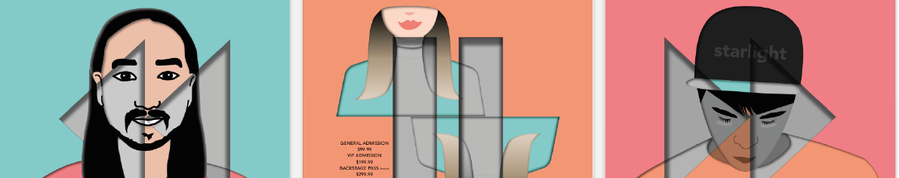
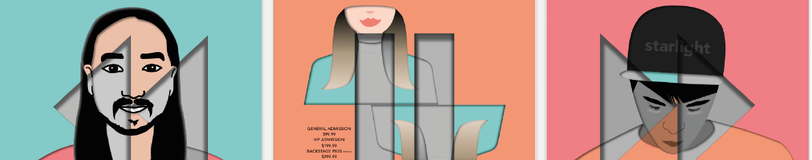

Creative Design Festival 2019
A primeira edição 2020 do Creative Design Festival vem implementar a dinamização e criatividade dos jovens de todo o mundo.
Lisboa recebe a 25 de março de 2020 no Centro Cultural de Belém a comunidade mais jovem e dinamica do momento que irá concorrer a três dististos prémios.
Designers de todas as áreas vem trocar ideias, pontos de vista e realizar debates sobre o que o futuro os reserva....as perspectivavas do amanhã o futuro e a sustentabilidade dentro da areas mais criativa da Design, Ilustração e Comunicação.
Este festival tem como objetivo dotar a cidade de Lisboa de um forum cultural de impacto internacional, dignificar o design e encorajar a produção e realizaçao de trabalhos e projetar Portugal no mundo do design mundial.
Regulamento
Para realizar a sua participação neste evento tem de:
+18 anos
Projetos ineditos e exclusivamente de caris ligado ao design
Ano de produção não ser anterioir a 2020
Ilustração
A categoria de Ilustração obedece às regras de: cor, tamanho, e mensagem ilustrativa .
Produto
A categoria de Design de Produto obedece às regras de: embalagem, cor e tamanho.
Comunicação
A categoria de Design de comunicação obedece às regras de: cartão de visita, tamanho.
Prémios
Prémio - Ilustração: Estágio remunerado na empresa "ilstration". Ilustração original para a capa adaptado ao último livro do escritor Valter Hugo
Prémio - Design Produto: Produção de um utilitario na fábrica Vista Alegre Portugal, com venda exclusiva nas lojas da marca.
Prémio - Design Comunicação: Estágio remunerado na empresa Young&Rubicam.
Dia de Voto
As votações ocorrem após a entrega dos 4 projetos selecionados e que cumpram todos os requesitos previamente pedidos.
Patrocinios
Os patrocinadores oficiais deste evento são: Camara Municipal de Lisboa,CCB, CARRIS e Telepizza.
Contactos
Creative Design Festival
e-mail: creativedesignfestival@gmail.com
(+351) 910802587
web: https://www.creativedesignfestival.com

 
